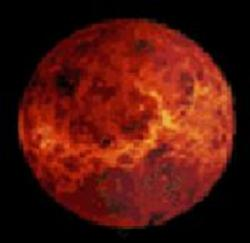

VENUS

VENUS IS THE TSECOND PLANET FROM THE SUN.
VENUS SHINES LIKE A STAR IN THE NIGHT SKY.
IT IS THE BRIGHTEST OBJECT IN THE SKY AFTER THE SUN AND THE MOON.
VENUS IS THE HOTTEST PLANET WITH ITS SURFACE REACHING TEMPERATURE UPTO 470 DEGREE C.
VENUS IS THE NEAREST PLANET TO YHE EARTH IN SIZE-12,102 KM AWAY FROM EARTH.
jjjjjjjjjjjjjjjjjjjjjjjjjjjjjjjkkkkkkkkkkggggggggggggggggkkkkkkkkjjj
Back